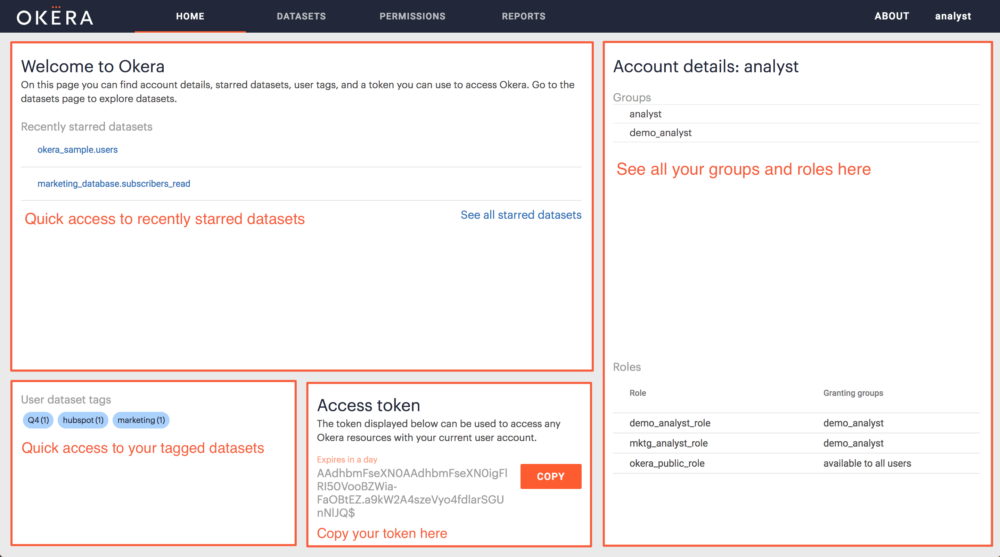
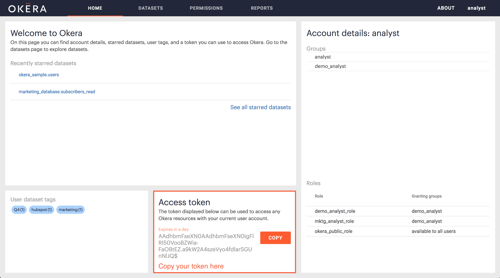
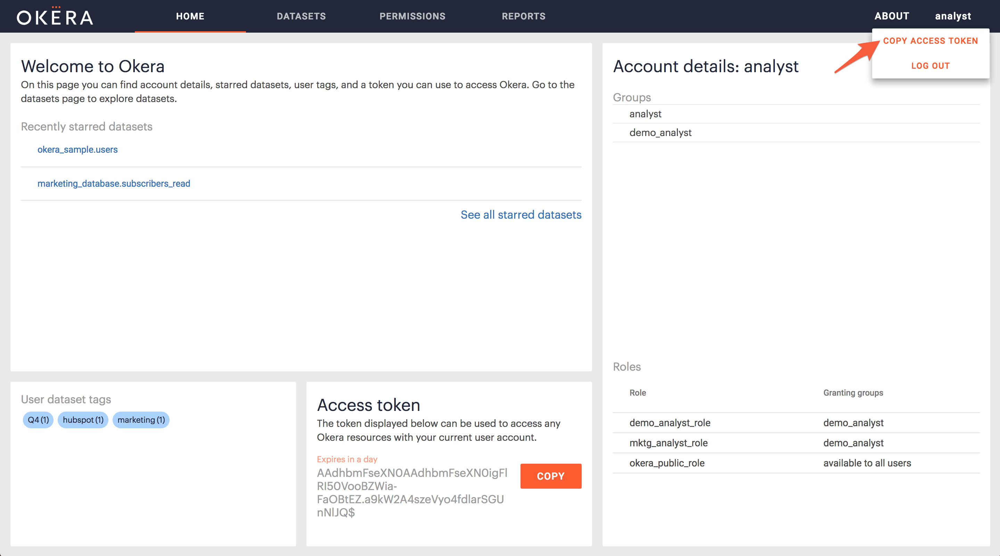
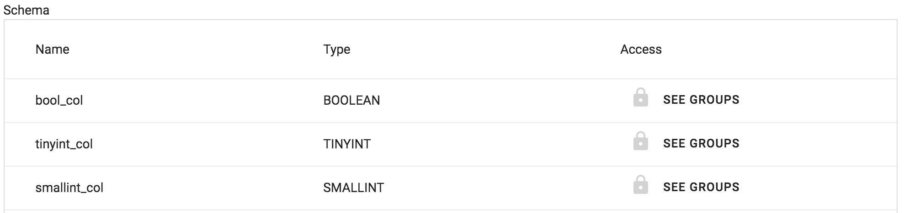

Okera Web UI Basics
The Okera Web UI provides a read only-user interface to:
- View your account information.
- Find and understand datasets.
- Understand your access to datasets and columns.
- Get programmatic access to a dataset.
Tip: For advanced administrator features, see Web UI for Admins
Accessing the Web UI
To access the Web UI, browse to the URL provided by your Okera administrator.
Supported Browsers
The Okera Web UI is supported on the latest versions of the following browsers:
- Google Chrome
- Mozilla Firefox
- Microsoft Edge
- Apple Safari
Logging In
Use the Login screen to access the Web UI. The Login screen is configured to provide login options depending on your cluster configuration. The login options include:
- token login Authenticate with Okera, JWT, and SSO tokens.
- username/password login Authenticate using LDAP credentials.
- OAuth login Authenticate with OAuth.
A note on SSL
If Okera is configured to run with SSL enabled using a self-signed certificate, the SSL certificate must be setup on your local system for the Web UI to be accessible to your browser. If, upon navigating to the Web UI, the browser warns that the site is not trusted, the SSL certificate may need to be installed.
Please note that even if you bypass your browser’s certificate warning, the Okera Web UI will likely continue to not work, with the Login screen reporting this message:
Could not contact server. Check your network connection and try again later.
If you see this message, it could mean you need to install the SSL certificate. Contact your Okera administrator.
Using the Web UI
Once you are logged in, the Web UI starts you off in your Okera Home page. From here, you can directly access most of your options.
Account Details
The Home page shows your account information:
- your Okera username
- the groups you belong to
- the roles you have been granted
- the groups granting you those roles
- your access token, including expiry information
Tip: you can use
Ctrl+ForCmd+F(Mac) to quickly find a group or role name.

About Modal
A modal is triggered by the About link at the top right corner next to your username. This dialog displays information about your Okera cluster:
- UI version
- build hash
- Planner version
- Planner host/port
- REST API endpoint
- authentication methods available
Copying Your Access Token
There are two places you can readily find your access token. It is available on your Home screen, or from any screen by way of the user menu.
Click Copy adjacent to the access token on your home screen.

Or choose the Copy Access Token menu option revealed by clicking your username.

Datasets Page
Click the Datasets navigation tab at the top to access the datasets page.
Use the Datasets page to browse, search, filter, and preview your accessible Okera datasets. With admin dataset access, review group access to datasets fields.
Any dataset where you have any level of access appears in this list. Datasets to which you have no access will not appear at all.
Searching and Filtering Datasets

At the top of the page you can select datasets search and filter options:
- Search box
Search by dataset name. Any dataset
name containing your input as a substring is displayed.
Tip: You can quickly clear this box with the ESC key.
- Filter by database multi-select box Filter the list to include only datasets in a particular database or set of databases.
Dataset Details
To display a details panel for a given dataset, click its dataset card in the list. The details panel will appear on the right side of the screen.

This page contains:
- The dataset’s metadata, including:
- Database name
- Dataset name
- Owner
- Location
- Description
- Created (the date and time the dataset was created)
- Metadata Changed (the date and time the metadata was last changed)
- View Definition (if dataset is an external view)
- The dataset schema described in full:
- Total number of columns in the schema (next to ‘Schema’ tab)
- Each column in the dataset is shown, including:
- Name
- Type
- Access (whether you have read-access to view the cells in this column)
Note If a column’s name has a gray background, it is a partitioning column

Column Access
If your schema looks similar to the table below, you do not have access to every column in the dataset.

To display a list of groups with access to the data column, click See Groups associated with the applicable data column name. To gain access to that column’s data, you must be added to one of these groups.
Dataset Preview
To preview a dataset, click Show Preview in the upper right of the details panel.

-
No more than 200 rows are shown (to view more, see “Dataset usage” below).
-
Column information with no access is not visible.
-
The modal can scroll vertically and horizontally.
Get-Started Snippets
To start using a dataset, click Get Started on the upper right of its details panel.

Sections of different sample code are displayed, such as for Spark, Hive, Python, R, and CURL. Click the tab of your choice to retrieve integration code suitable for your application.
Datasets with Errors
In the UI, datasets with errors are those that failed to load due to a problem with their metadata (e.g., unsupported datatype). Datasets with errors are listed alongside datasets that loaded properly. Clicking a failed dataset reveals the error message on the details page on the right.

Note
There may be other datasets with issues in the Okera deployment. The UI only lists them here if there are metadata errors. Problems in view configuration or in the data itself are not visible in the datasets page.
Logging Out
To logout, click your username in the upper right part of the screen. Then click Logout.
Warning
Your credentials are saved in the browser until either your token expires, or you explicitly log out. Be aware of this security issue when sharing access to your computer.
Admin Features
For advanced features accessible to users with special privileges on datasets, see Web UI for Admins.